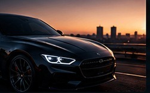

Сайт для всех, кто хочет понимать устройство своего автомобиля чуть лучше.

ЗАЧЕМ МЫ ЗДЕСЬ
Сложное делаем понятным
AutoLab — образовательный сайт об автомобилях. Здесь собрана базовая информация об устройстве машины, обслуживании и полезных терминах.
Проект разработан для учебной дисциплины «Веб-аналитика» и демонстрации анализа посещаемости веб-ресурса.
06разделов
10вопросов в тесте
∞возможностей узнать новое
ПРОСТЫЕ ЦЕЛИ
Что ты найдёшь на сайте
Сведения об основных автомобильных системах
Советы по плановому обслуживанию
Быстрый поиск по словарю
Интерактивный тест знаний
Информация носит справочный характер. При обслуживании конкретной модели обращайся к руководству производителя.
ПОДЕЛИТЬСЯ
Понравился AutoLab?
Поделись ссылкой, чтобы знакомые тоже узнали что-то новое.
Ссылка будет вести на сайт после публикации в интернете.
Приватность и статистика
Это учебный проект. Отметки чек-листа сохраняются только в памяти браузера на твоём устройстве. В исходной версии сайта сторонние счётчики ещё не установлены. После их подключения сведения о посещениях могут обрабатываться соответствующими сервисами веб-аналитики; информация об используемых инструментах будет обновлена.